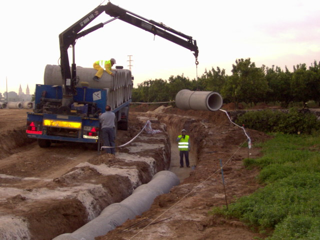

 TUBERIAS ENTERRADAS FIBROCEMENTOS Relleno de la zanja en la instalación de tuberías Podemos definir la instalación de una tubería como el conjunto de acciones que hay que realizar para colocarla en su posición definitiva... Publicado el 2021-03-27
Tratamiento de ignifugado en tuberías de alta complejidad El aislamiento ignífugo flexible para tuberías situadas en paredes o techos, está compuesto por una espuma elastomérica ... Publicado el 2021-02-01